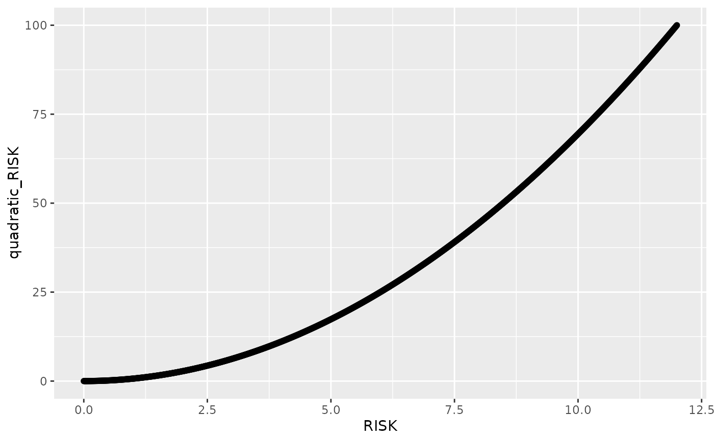

Scaling range transformation function (re-scaling)
rescale_risk_scores.RdThis function supports multiple scaling methods to transform risk values from an existing range to another. By default the output range is between 0 and 100.
Arguments
- dataset
dataset to add scaled risk column to.
- cols
Column containing numeric vector of risk values in the range [0, 12] OR a named vector, names will be used as the
names_toarg, giving new names to rescaled columns.- from
existing range of possible values for
risk_colthat will be converted to- to
new range of possible values for
risk_col, by default it is 0 to 100.- method
The scaling method to apply. Options are
"linear","quadratic","exponential","sigmoid", or"complementary".- inverse
boolean to inverse the risk values, i.e. low becomes high, and high becomes low. Similar to the
"complementary"value of method, but can be added to quadratic.- names_prefix
string, prefix
colsnames to have new names for scaled columns.- names_to
string vector, provide new name for rescaled columns.
- keep_cols
default TRUE, whether to keep
colscolumns after rescaling is done or to remove.
Details
Below are the equations used for each method:
Linear Scaling $$f(x) = \frac{x - 0}{12 - 0} \cdot (100 - 0) + 0$$
Quadratic Scaling $$f(x) = \left(\frac{x - 0}{12 - 0}\right)^2 \cdot (100 - 0) + 0$$
Exponential Scaling $$f(x) = \frac{\exp(x / 12) - 1}{\exp(1) - 1} \cdot (100 - 0) + 0$$
Sigmoid Scaling $$f(x) = \frac{100}{1 + \exp(-10 \cdot (\frac{x}{12} - 0.5))}$$
Examples
# rescale_risk -----
library(riskintrodata)
library(riskintroanalysis)
dat <- data.frame(RISK = seq(0, 12, by = 0.01))
dat_scaled <- rescale_risk_scores(
dataset = dat,
cols = "RISK",
method = "quadratic",
from = c(0, 12),
to = c(0, 100),
names_prefix = "quadratic_",
keep_cols = TRUE
)
ggplot(dat_scaled, aes(x = RISK, y = quadratic_RISK)) +
geom_point()
